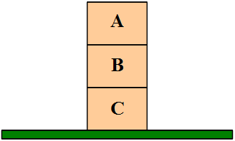

In this section five common “higher-level” data structures are introduced. They are: stacks, queues, lists, trees, and graphs. Each of these structures represents a way to organize data so that it may be applied to solve certain problems in an efficient manner.
Three of these structures: stacks, queues, and lists; are linear in nature – their items logically exist one after another in sequential order. The other two structures, trees and graphs, are non-sequential – their contents can not be meaningfully represented by a simple sequential listing.
A stack of three blocks